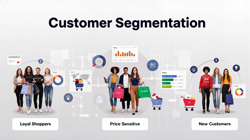
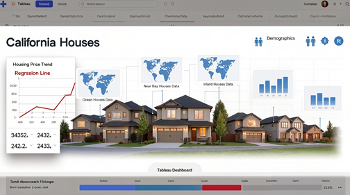

Projects
數據分析與 AI 實作專案
以下專案皆以實作為核心，並結合 AI 協作完成，涵蓋資料分析、程式開發、報表生成、內容研究與行銷應用，持續探索 AI 與數據分析在商業情境中的應用可能。由於近期作品較能反映目前的實作能力與作品品質，故以下依完成時間由近至遠排序。
Works
5 projects

黑色星期五顧客分群分析
以零售情境為背景，透過 K-prototypes 分群分析探索顧客輪廓與消費特徵，並結合 Power BI 與 Power Query 完成資料整理與視覺化，展現資料分析與行銷洞察能力。

1990 年美國加州房產市場因素分析
以房價預測情境為例，運用迴歸分析探索影響房價的關鍵因素，並完成資料整理、視覺化與分析驗證，展現結構化分析與問題拆解能力。